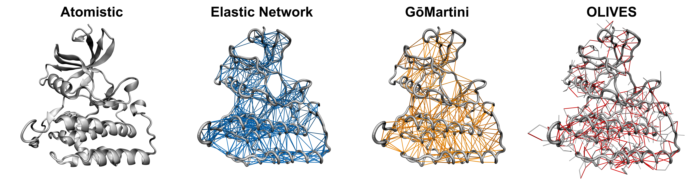
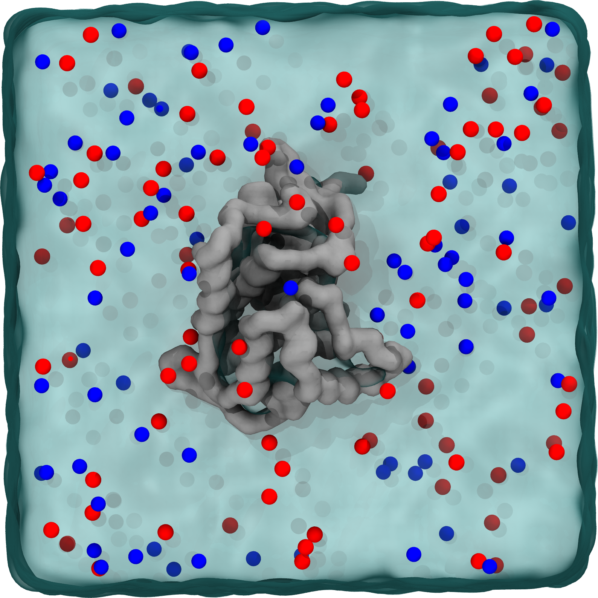

Tutorial I.I: Setup of Martini 3 Protein Structure Models
This tutorial is part of "Martini 3 protein models - a practical introduction to different structure bias models and their comparison".
In case of issues, please contact duve@fias.uni-frankfurt.de, luis.borges@ens-lyon.fr, or thallmair@fias.uni-frankfurt.de.
If you would like to refer to information of this tutorial, please cite T. Duve, L. Wang, L. Borges-Araújo, S. J. Marrink, P. C. T. Souza, S. Thallmair, Martini 3 Protein Models - A Practical Introduction to Different Structure Bias Models and their Comparison, bioRxiv (2025), doi: 10.1101/2025.03.17.643608.I.I.1 Preparation of the Protein Structure
In this tutorial, we will prepare different Martini 3 structure bias models for the protein kinase casein kinase delta 1 (CK1δ) [22]. In Sections I.I and I.II, we will focus solely on the structured region of this protein (residues 1-292), while the IDR (residues 293-415) will be covered in Section I.III. We use an experimental crystal structure as a starting structure [22]. Start by downloading the structure with the PDB code 4JJR from the RCSB-PDB using:
wget https://files.rcsb.org/download/4JJR.pdbTo use the PDB structure we first need to remove all atoms that are not part of the protein. This can be water molecules or detergents, ligands, or other molecules used to aid in the crystallization of the protein. The file can be cleaned using the following command.
grep "\^ATOM" 4JJR.pdb > 4JJR_clean.pdbLooking at the PDB file, we can see that the protein is present as a dimer. We are interested in the monomer, as CK1δ is a monomer in solution and the dimer is not known to have biological significance[22]. Therefore, we remove chain B with the following command.
grep " A " 4JJR_clean.pdb > 4JJR_clean_A.pdbChain A of the CK1δ structure is missing several residues (43-46, 171-173, 217-222), which need to be modelled before conducting MD simulations. This can be done by providing the SWISS-MODEL web-tool[23] with the clean crystal structure (4JJR_clean_A.pdb) and the respective amino acid sequence. The web-tool returns a PDB structure of the full protein which contains the missing residues. An alternative to using an experimental structure is to predict the full structure of CK1δ using AlphaFold[24]. Here, only the amino acid sequence of the protein is needed. Our final structure covers the structured region of residues 1-292.
As a last step in the preparation of our atomistic structure, we check the protonation state of the protein using the H++ web-server[25]. Alternatively you can use PROPKA3[26]. We follow the predicted protonation state and use the provided PDB file in the following, which we will name CK1d.pdb.
I.I.2 Atomistic Reference Simulation
We recommend running atomistic reference simulations to validate the CG Martini 3 protein model (see Section I.II). For example, you can use the CHARMM-GUI Solution Builder[27, 28] to build the system and generate topologies using the final PDB file generated in Section I.I.1. Solvate the system using 0.15M of NaCl and neutralize it by adding the appropriate number of counter-ions. Here, we recommend conducting at least two replicas of 1 μs each.
I.I.3 Generating the Martini 3 Protein Model
Now that we have a complete atomistic starting structure of CK1δ, we can prepare the CG structure. Here, we use the Martinize2 program (version 0.12.0) [15], which generates a CG structure and the necessary topologies to perform simulations with GROMACS based on an atomistic reference structure. The command martinize2 -h or the Vermouth documentation provide additional information and a complete list of options, which are not discussed comprehensively here. In general, Martinize2 assigns placeholder names to molecules and topology files.
I.I.3.1 Unbiased Coarse-Grained Model
First, we generate a model without a structure bias model, using the recommended default options for the Martini 3 protein model[13]. This step is done here for illustration purposes only and is normally not recommended for folded domains. We provide Martinize2 with our complete atomistic reference structure using the flag -f CK1d.pdb. The flag -ff martini3001 specifies the force field version to be used, in this case, Martini 3.0.0. The -p backbone flag generates position restraints of the protein backbone, which are used during the minimization of the system. In addition, the flag -dssp adds secondary structure-dependent bonded potentials, designed to stabilize the secondary structure of the protein [29]. By default, Martinize2 uses the mdtraj module[30] to determine the secondary structure. Alternatively, the DSSP binary can be installed and provided to Martinize2 via the flag -dssp path/to/dssp. Note that Martinize2 is only compatible with DSSP versions 3.1.4 or lower. In older versions of Martinize2, the flags -cys auto and -scfix need to be specified to add disulfide bridges and to improve the orientations of sidechains [14], whereas these are the default options as of version 0.12.0.
martinize2 -f CK1d.pdb -x CK1d_cg.pdb -o CK1d_only.top \
-ff martini3001 -p backbone -dssp Martinize2 will generate three files: the CG protein structure (CK1d_cg.pdb), the GROMACS topology file (CK1d_only.top), and the protein .itp file (molecule_0.itp).
I.I.3.2 EN Model
To generate the EN model, the flag -elastic needs to be provided, in addition to the previously described flags. The EN model has three parameters, which can be specified using the flags -ef, -el, and -eu respectively. The flags -el 0 and -eu 0.85 specify the lower and upper cutoff for the generation of elastic bonds to 0 nm and 0.85 nm, respectively.
martinize2 -f CK1d.pdb -x CK1d_cg.pdb -o CK1d_only.top \
-ff martini3001 -p backbone -dssp -elastic -el 0 -eu 0.85 Again, three files are created by Martinize2. The EN model added 1004 bonds to the protein topology. To optimize the EN model, the upper cutoff (-eu) can be modified. Additionally, the force constant of the harmonic potentials can be changed using the flag -ef (see Section I.II.1.1). However, we recommend not to use force constants below the default value of 700.0 kJ/(mol nm2), as it was shown that lower values cause increased stickiness of proteins [13, 31].
I.I.3.3 GōMartini
The generation of a Gō-like network using GōMartini necessitates a contact map based on the atomistic input structure [17], which can be generated using the Go Contact map web-server with the default settings. Alternatively, the locally compiled ContactMapGenerator program can be used. In version 0.13.0 of Martinize2, the contact map can also be generated by Martinize2 using the -go flag without any further argument. The contact map is a map of residue overlap (OV) and restricted chemical structural units (rCSU) in the reference structure. The resulting .out file can be downloaded and provided to Martinize2 using the -go contact_map.out flag. The -go-moltype flag enables the user to name the protein and output files. The potential depth of the Gō-like network can be tuned via the -go-eps flag. The -go-low 0.3 and -go-up 1.1 flags set the lower and upper cutoffs for contacts which are included in the GōMartini model to 0.3 nm and 1.1 nm, respectively.
martinize2 -f CK1d.pdb -x CK1d_cg.pdb -o CK1d_only.top \
-ff martini3001 -p backbone -dssp -go contact_map.out \
-go-low 0.3 -go-up 1.1 -go-eps 9.414The GōMartini model adds 609 potentials to the protein topology. Like the EN model, the GōMartini model can be optimized by modifying the depth of the Lennard-Jones potential (-go_eps, see Section I.II).
In addition to the CG protein structure and topology, Martinize2 returns two files: go_atomtypes.itp, which defines the atom types of the virtual sites, and go_nbparams.itp, which defines the Gō-like network. It is important not to change the names of these files, as they are referenced in other files. We now need to add two #include statements to the default martini_v3.0.0.itp file. First we include go_atomtypes.itp in the [ atomtypes ] section using the following command.
sed -i "s/\[ nonbond_params \]/#ifdef GO_VIRT\n#include "go_atomtypes.itp"\n #endif\n\n\[ nonbond_params \]/" martini_v3.0.0.itp Then go_nbparams.itp is added to the topology in the [ nonbond_params ] section.
echo -e "\n#ifdef GO_VIRT \n#include "go_nbparams.itp"\n#endif" >> martini_v3.0.0.itp Note, that these commands should only be executed once. It is important that the files go_atomtypes.itp, go_nbparams.itp and the modified martini_v3.0.0.itp are located in the same directory. Finally, we need to activate the #include statements, by stating #define GO_VIRT at the top of the master topology file.
I.I.3.4 OLIVES
In contrast to the previously discussed protein structure models, the OLIVES model[12] is recommended to be used without DSSP restraints, to enable conformational changes and partial unfolding of domains. In studies where this is not to be expected one can consider adding DSSP restraints. In our case, we generate two models, OLIVES and OLIVES + DSSP. To create them, we first need to generate a CG protein structure and topology using Martinize2. For OLIVES + DSSP we can use the files we generated in Section I.I.3.1. For OLIVES (without DSSP) we use the same command as in Section I.I.3.1, but omit the -dssp flag.
The OLIVES model is generated using an additional Python script, which can be obtained from GitHub. The respective CG structure and topology files are provided to the OLIVES script using the flags -c "CK1d_cg.pdb" and -i "molecule_0.itp".
python3 OLIVES_v2.1.1b_M3.0.0.py -c "CK1d_cg.pdb" -i "molecule_0.itp" The OLIVES script modifies the provided protein topology file. For CK1δ, the OLIVES model adds 374 potentials to the protein topology. In contrast to the EN and GōMartini models, optimization of the OLIVES model is currently not as well-explored. Nevertheless, there are options available to tune the cutoff for the generation of the secondary and tertiary network via the flags –ss_cutoff and –ts_cutoff and to scale the strength of the secondary and tertiary structure bonds using the flags –ss_scaling and –ts_scaling, respectively. Figure 3 shows the bond networks created for CK1δ by each structure bias model.

I.I.4 Coarse-Grained Martini 3 Simulations
With the coordinates and topology of the protein, we can prepare a starting system for a simulation by placing the protein in a simulation box. For this task, we will use the Python script insane[32]. Alternatively, one can use gmx solvate or COBY[33]. We specify the box type (-pbc cubic) and size (-box 10,10,10) and solvate the protein in water (-sol W), adding 0.15 M of NaCl (-salt 0.15), while automatically adding the appropriate amount of counter ions to neutralize the system. Note that when using older versions of Martinize2 in combination with the GōMartini model, the charge of the protein needs to be specified using the -charge 11 flag. As the virtual sites for the GōMartini model were added at the end of the file, the insane script counts each residue twice and therefore doubles the charge.
insane -f CK1d_cg.pdb -o CG.gro -p system.top -pbc cubic -box 10,10,10 -salt 0.15 -sol W -d 0 -charge 11Insane adds NA+ and CL- to the .gro and topology file, a remnant of the Martini 2 nomenclature, while the standard Martini 3 ions are labelled NA and CL. Therefore, remove the charge sign in CG.gro and system.top. You may get a list of molecules in the .top file similar to this:
[ molecules ]
; name number
CK1d 1
W 8230
NA 85
CL 96 Additionally, add the relevant Martini 3 force field topologies at the top of the master topology file.
#define GO_VIRT; only for GoMartini
#include "./martini_v3.0.0.itp"
#include "./martini_v3.0.0_ions_v1.itp"
#include "./martini_v3.0.0_solvents_v1.itp"
#include "./CK1d.itp" The system setup is depicted in Figure 4.

We are now ready to perform CG MD simulations of CK1δ using different structure bias models. First, we will do a short energy minimization, followed by a position-restrained NPT equilibration. The previously generated position restraints can be used by specifying define = -DPOSRES in the .mdp file.
gmx grompp -p system.top -c solvated.gro -f minimization.mdp -o minimization.tpr -r solvated.gro
gmx mdrun -deffnm minimization -v gmx grompp -p system.top -c minimization.gro -f equilibration.mdp -o equilibration.tpr -r solvated.gro
gmx mdrun -deffnm equilibration -v We can now start a production run. If the simulation crashes, more equilibration steps might be needed. However, it’s important to note that for simple smaller proteins, such as this one, Martini is generally quite robust, and crashes may indicate issues with the built models or systems. Note that you will get a warning about the simultaneous use of the Parrinello-Rahman barostat and newly generated velocities. This can be ignored by using the -maxwarn 1 flag.
gmx grompp -p system.top -c equilibration.gro -f dynamic.mdp -o dynamic.tpr -maxwarn 1
gmx mdrun -deffnm dynamic -v Note that when using the OLIVES model, the flags -noddcheck -rdd 2.0 need to be specified in gmx mdrun to avoid domain decomposition errors during the simulation[12]. To judge the proficiency of each model to replicate the properties of a given protein, we recommend at least three replicas of 250 ns, following the recommended 1:4 ratio for comparisons between atomistic and CG Martini simulations, due to the smoothed energy landscape of CG simulations [34]. 250 ns of CG simulations correspond to approximately 1 μs of effective simulation time.
The following Section (I.II) will discuss different metrics that can be used to judge which protein structure model is the best suited for a specific use case.